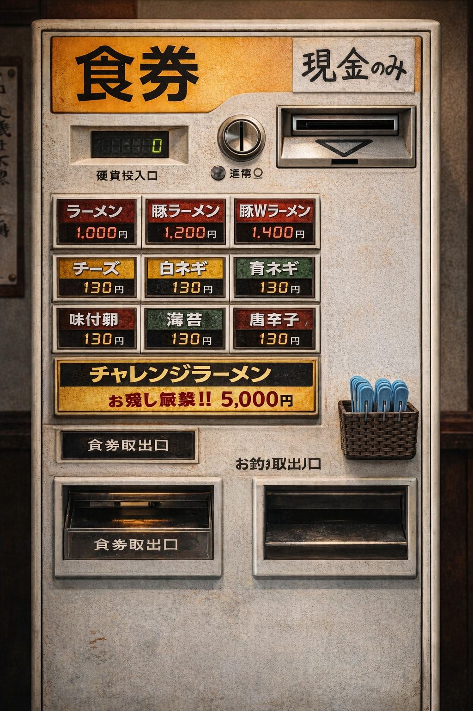
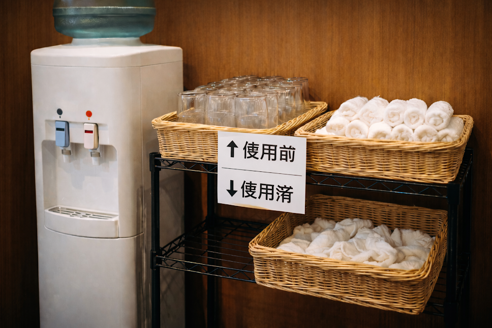

漢気らーめん宏に初めて入店するから分からない…
初めての入店で緊張する…
久しぶりの入店で利用方法を忘れてしまった…

開店前は、多くのお客様で長蛇の列が
出来ていることがあります！
他のお客様の間に割り込むことの無いようお願いします！
開店しましたら、店員の指示に従って
順番に食券を買うようにお願いします！！

※メニューの詳細はこちら
当店のお支払方法は現金のみとなっております！
お金を投入しましたらボタンを押して下さい！
食券とおつりが出てきますので、
おつりの取り忘れには十分ご注意下さい！
完了しましたらまた列にお戻り下さい！
列に再び戻りましたら、
今度は店員が麺の量を聞きに来るので、
麵の量をお答えください！
※チャレンジラーメンを除く
100gから200gまでは50g単位、
200gからは100g単位で最大1000gまで
可能です！
※400g以上はお残し厳禁です。
※500g以上の際は+100円頂戴します。
※500g以上の際は横にある
洗濯ばさみを付けて下さると
非常に助かります。

店員から案内されましたら、
入口の近くには、おしぼり置場と
ウォーターサーバーがあるので
セルフでお取りください！
また、各机上に割り箸とレンゲが
あるのでご自由にお取り下さい！
席に座りましたら、店員から具の量を
聞かれますので、ニンニクの有無と
野菜・背油・タレの量をお答え下さい！
※具の量の詳細
超少なめ:普通の量の半分くらい
少なめ:普通の量の3分の2くらい
普通:通常の量
マシ:普通の量の1.5倍くらい
マシマシ:普通の量の2倍くらい

食べ終わりましたら、
お盆を上にあげて下さると助かります！
箸、レンゲも上にあげて下さい！
また、おしぼりは「使用後」のカゴに
入れて下さると助かります！